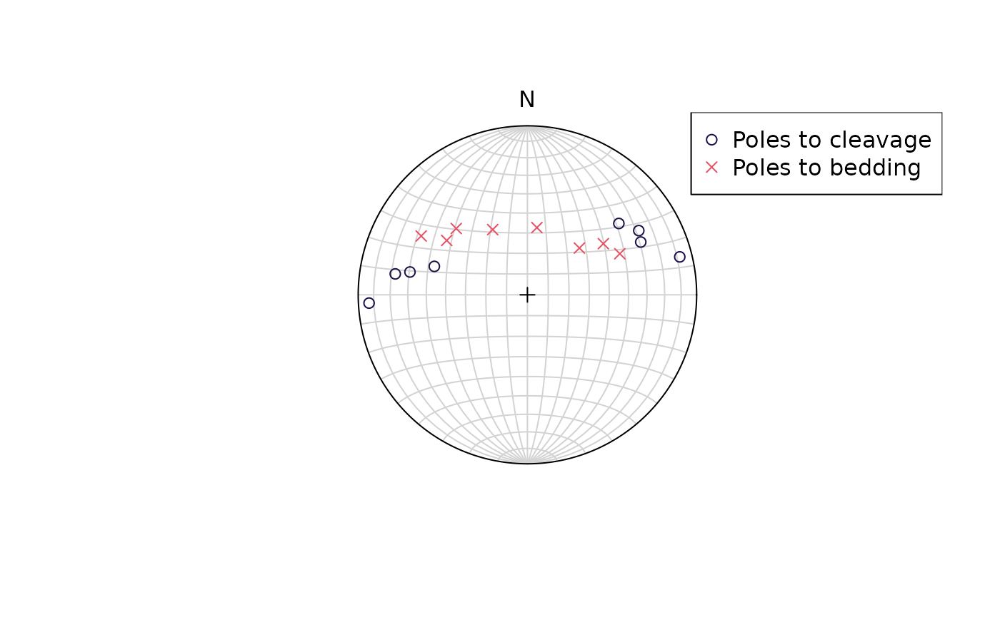
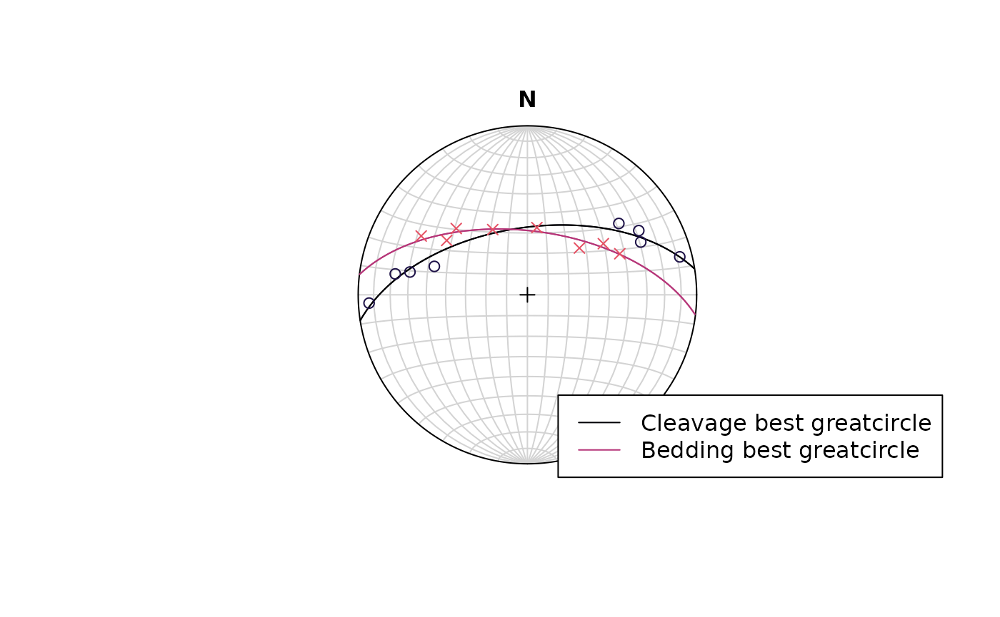
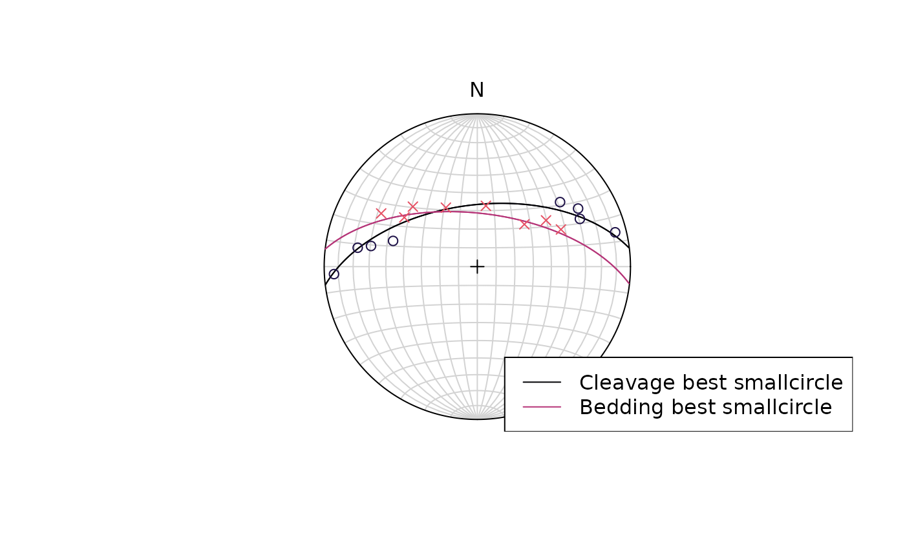

This tutorial demonstrates geodesic regression, a method to determine statistically the best-fit great- or small-circle for a set of vectors.
Import some example data of some folded fabric elements
data("gray_example")
gray_example
#> Plane object (n = 16):
#> dip_direction dip
#> Cleavage 232 58
#> Cleavage 245 63
#> Cleavage 256 82
#> Cleavage 87 83
#> Cleavage 99 68
#> Cleavage 101 60
#> Cleavage 107 48
#> Cleavage 240 65
#> Bedding 246 50
#> Bedding 236 45
#> Bedding 228 34
#> Bedding 188 33
#> Bedding 152 36
#> Bedding 133 48
#> Bedding 124 48
#> Bedding 119 61Show data in equal-area projection:
cleavage <- gray_example[1:8, ]
bedding <- gray_example[9:16, ]
stereoplot()
points(cleavage, col = "#1D1147")
points(bedding, col = "#E65164", pch = 4)
legend("topright", col = c("#1D1147", "#E65164"), pch = c(1, 4), legend = c("Poles to cleavage", "Poles to bedding"), bg = "white")
The diagram suggests that both the cleavage and the bedding poles are oriented along great-circles or small-circles. To find out the orientation of these axes and decide whether the orientation better fit a great- or small-circle solution, we’ll perform a (geodesic) regression.
Best-fit great circles
First, we determine the best-fit great-circle for the two fabric
elements. The great-circle regression is done via
regression_greatcircle(), which a returns a list containing
the axis of the great-circle:
cleavage_gc <- regression_greatcircle(cleavage)
bedding_gc <- regression_greatcircle(bedding)
# The axis of the great circles:
cleavage_gc$vec
#> Plane object (n = 1):
#> dip_direction dip
#> 351.21775 57.37635
bedding_gc$vec
#> Plane object (n = 1):
#> dip_direction dip
#> 6.893869 58.942197The algorithm minimizes the sum-of-squares of the residuals, which are the angular distances of the best-fit axes to the data vectors. We can check if the optimization successfully converged, and asses the quality of the fit using the R2:
# Check
cleavage_gc$convergence == 0 & cleavage_gc$min_eigenvalue > 0
#> [1] TRUE
bedding_gc$convergence == 0 & bedding_gc$min_eigenvalue > 0
#> [1] TRUE
# R^2 value
cleavage_gc$r_squared
#> [1] 0.5364717
bedding_gc$r_squared
#> [1] 0.9770348Plot the results
stereoplot()
lines(cleavage_gc$vec, col = "#000004FF")
lines(bedding_gc$vec, col = "#B63679")
points(cleavage, col = "#1D1147")
points(bedding, col = "#E65164", pch = 4)
legend("bottomright", col = c("#000004FF", "#B63679"), lty = c(1, 1), legend = c("Cleavage best greatcircle", "Bedding best greatcircle"), bg = "white")
Best-fit small circles
cleavage_sc <- regression_smallcircle(cleavage)
bedding_sc <- regression_smallcircle(bedding)
# Half-apical angle of small-circle cone (in degrees)
cleavage_sc$cone
#> [1] 88.58424
bedding_sc$cone
#> [1] 92.12321Check the optimization convergence and the fit:
# Check
cleavage_sc$convergence == 0 & cleavage_sc$min_eigenvalue > 0
#> [1] TRUE
bedding_sc$convergence == 0 & bedding_sc$min_eigenvalue > 0
#> [1] TRUE
# R^2 value
cleavage_sc$r_squared
#> [1] 0.5368224
bedding_sc$r_squared
#> [1] 0.9771265Plot the results:
stereoplot()
lines(cleavage_sc$vec, cleavage_sc$cone, col = "#000004FF")
lines(bedding_sc$vec, bedding_sc$cone, col = "#B63679")
points(cleavage, col = "#1D1147")
points(bedding, col = "#E65164", pch = 4)
legend("bottomright", col = c("#000004FF", "#B63679"), lty = c(1, 1), legend = c("Cleavage best smallcircle", "Bedding best smallcircle"), bg = "white")
References
Bachmann, F., Jupp, P. E., & Schaeben, H. (2014). Estimating the number and locations of Euler poles. International Journal on Geomathematics, 5(2), 289–301. https://doi.org/10.1007/s13137-014-0064-2
Davis, J. R., & Titus, S. J. (2017). Modern methods of analysis for three-dimensional orientational data. Journal of Structural Geology, 96, 65–89. https://doi.org/10.1016/j.jsg.2017.01.002
Gray, N. H., Geiser, P. A., & Geiser, J. R. (1980). On the least-squares fit of small and great circles to spherically projected orientation data. Journal of the International Association for Mathematical Geology, 12(3), 173–184. https://doi.org/10.1007/BF01091203
Ramsay, J. G. (1967). Folding and Fracturing of Rocks. McGraw-Hill.